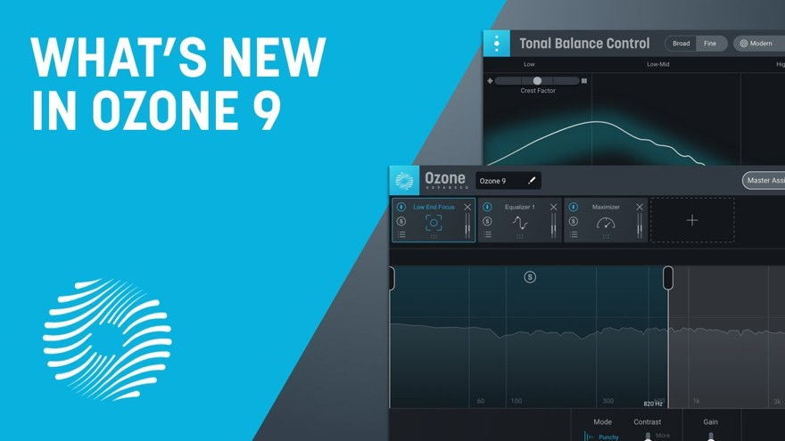
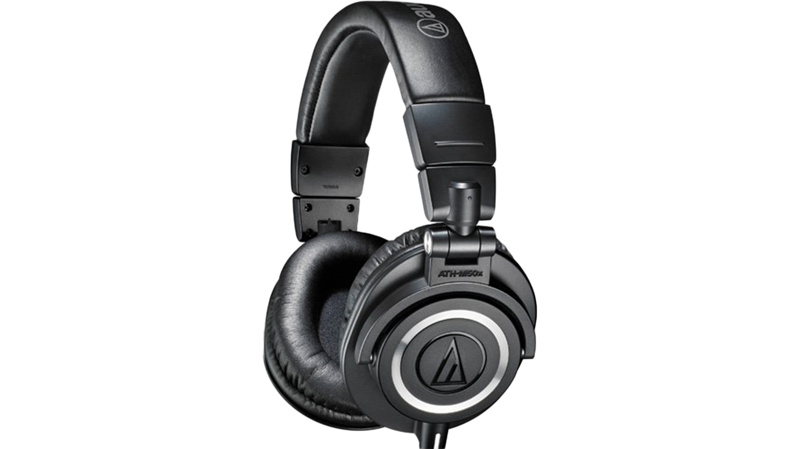
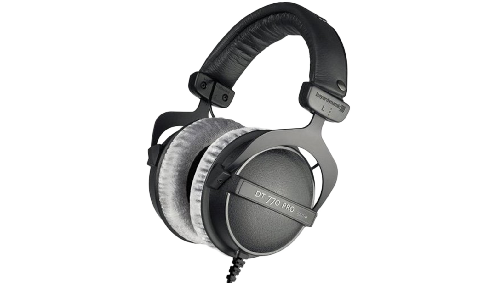
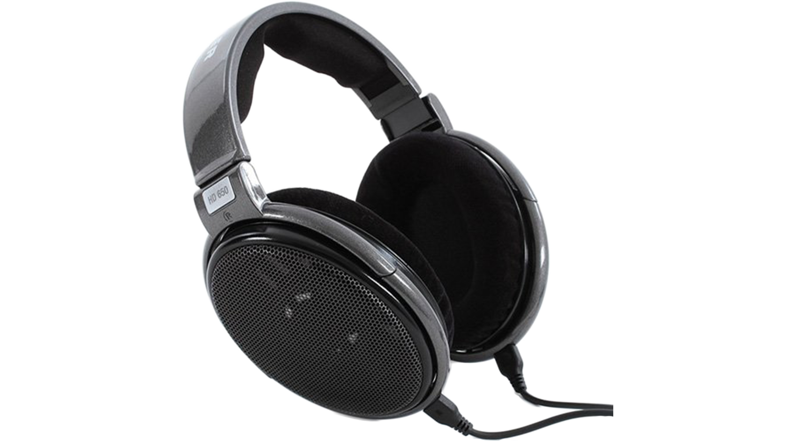

HOME
DAW's
VST'S
NEWS
VIDEOS
Recent News:

iZotope introduces Ozone 9, the latest version of its mastering software. Ozone 9 comes with intelligent processing for the low-frequency range, real-time separation, and control of vocals, bass, or drums in the stereo mix and a lot of improvements that use artificial intelligence. With Master Rebalance you can adjust the volume of vocals, bass or drums in the stereo mix without the need for single tracks or stems.
Steinberg closes the year with an important launch: the third version of Cubasis, its new Cubasis 3 DAW for iOS that has been rebuilt from scratch and offers several new features requested by users. The main novelty is the presence of Cubasis now on the iPhone, functioning as a universal app and allowing session exchange between both devices. You can now start projects on the iPhone and continue on the iPad. As they say, the app has been optimized for good performance on small screens, with easy navigation and dedicated sections.
Every producer needs a good pair of headphones for mixing, heres some of the most respected and popular models that wont break the bank:

Audio Technica ATH-M50X. well-balanced sound. The design is very good and the possibility to replace the cups and cables simply adds to its value. And last but not least, they are closed-back headphones which makes them great for tracking, DJ-ing, and recording. This model is probably the best selling product lately mainly because of the clear sound in the mids and highs. The bass is another thing worth mentioning here, but let’s just say – it’s accurate and deep.

Beyerdynamic DT 770 Pro. A great choice if you need a good pair of closed-back headphones for mixing and mastering.

Sennheiser HD 650. The titanium-sliver finish ensures a well-balanced sound specially designed for high-resolution monitoring. mixing and mastering engineers and audiophiles love this model